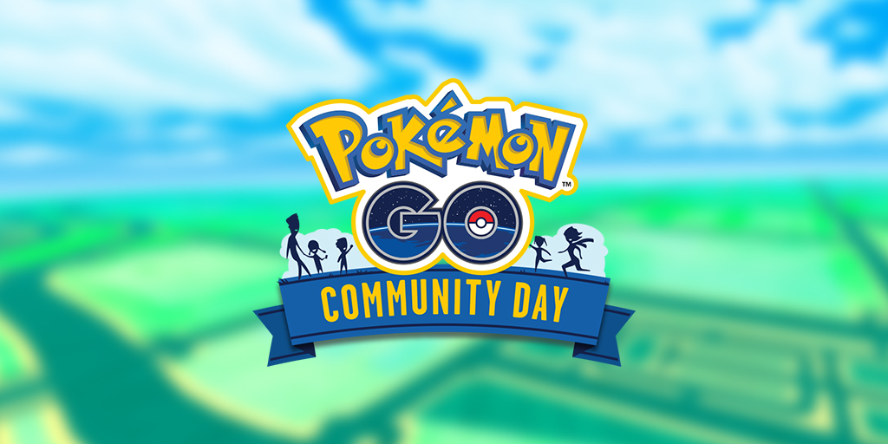
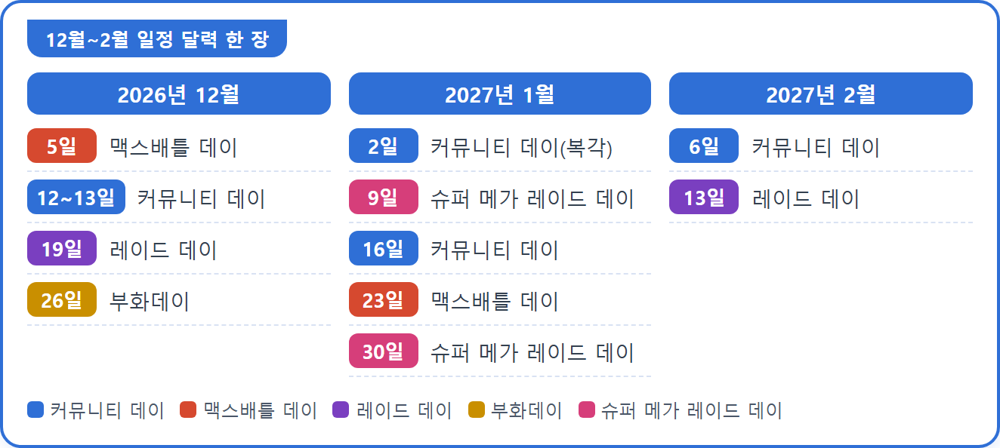

포켓몬고 12월 커뮤니티 데이 12월 12~13일, 1월 2일 복각 일정
포켓몬 GO 12월 커뮤니티 데이는 2026년 12월 12~13일로 잡혀 있고, 그 뒤 2027년 1월 2일에는 복각 커뮤니티 데이가 이어집니다. 12월 5일 맥스배틀 데이부터 2월 13일 레이드 데이까지 날짜부터 먼저 나온 이벤트가 한꺼번에 많아서, 12월부터 2월까지를 달력 한 장으로 모아 봤는데요.
이벤트 이름만 줄줄이 쌓아 두면 헷갈리니까 날짜 순서대로 표 하나에 모았습니다. 11월 일정을 챙기고 나면 곧바로 12월 커뮤니티 데이가 이어져서, 달력에 미리 적어 두기에 딱 좋은데요.

Pokémon GO 커뮤니티 데이 로고 이미지예요.
출처: Pokémon GO 공식 뉴스 / Scopely (공식 뉴스 원문)
포켓몬고 12월 커뮤니티 데이부터 2월까지 일정 한눈에
12월 5일 맥스배틀 데이부터 2월 13일 레이드 데이까지, 날짜가 정해진 이벤트를 순서대로 모으면 아래 표와 같습니다.
| 날짜 | 요일 | 이벤트 |
|---|---|---|
| 2026년 12월 5일 | 토 | 맥스배틀 데이 |
| 2026년 12월 12~13일 | 토·일 | 12월 커뮤니티 데이 |
| 2026년 12월 19일 | 토 | 레이드 데이 |
| 2026년 12월 26일 | 토 | 부화데이 |
| 2027년 1월 2일 | 토 | 커뮤니티 데이(복각) |
| 2027년 1월 9일 | 토 | 슈퍼 메가 레이드 데이 |
| 2027년 1월 16일 | 토 | 커뮤니티 데이 |
| 2027년 1월 23일 | 토 | 맥스배틀 데이 |
| 2027년 1월 30일 | 토 | 슈퍼 메가 레이드 데이 |
| 2027년 2월 6일 | 토 | 커뮤니티 데이 |
| 2027년 2월 13일 | 토 | 레이드 데이 |
| 2027년 2월 19~21일 | - | Pokémon GO Tour 2027 라이브 이벤트(대만 가오슝·미국 로스앤젤레스) |
표 출처: Pokémon GO 공식 뉴스 「다음 시즌의 커뮤니티 데이 일정」·「Pokémon GO Tour 2027」 안내

커뮤니티 데이만 따로 보면 12월 12~13일, 1월 2일(복각), 1월 16일, 2월 6일이 있습니다. 슈퍼 메가 레이드 데이는 1월에 두 번 들어 있고, 맥스배틀 데이도 12월 5일과 1월 23일 두 번이에요. 마지막 줄의 GO Tour 2027 은 위 이벤트들과 별개로 열리는 큰 행사라서 같은 표 끝에 붙여 뒀습니다.
날짜는 모두 토요일이고(12월 12~13일만 토·일), 12월 5일부터 2월 13일까지 토요일마다 이벤트가 하나씩 빠짐없이 이어지는 구성이에요. 같은 토요일이어도 맥스배틀 데이인지 레이드 데이인지 커뮤니티 데이인지에 따라 챙길 것이 달라지니까, 약속을 잡기 전에 그날 이벤트 종류부터 확인해 두시면 한결 편하실 거예요. 달력 그림의 색깔이 바로 그 종류 구분이라서, 약속이 많은 분들은 그림만 저장해 두셔도 되겠습니다.
12월 커뮤니티 데이 12월 12~13일, 지금 정해진 것
12월 커뮤니티 데이는 2026년 12월 12~13일이고, 이틀에 걸쳐 열리는 것으로 안내돼 있습니다.
보통 커뮤니티 데이는 하루짜리 이벤트로 기억하시는 분들이 많은데요. 이번 12월은 이틀짜리 표기라서, 첫날에 시간이 안 되는 분들도 다음 날 한 번 더 챙길 수 있는지 달력을 미리 확인해 두시면 좋을 거 같아요. 참고로 2026년 1월부터 커뮤니티 데이 대량발생 포켓몬에는 매년 스페셜 배경이 있을 수 있어요.
1월·2월 커뮤니티 데이, 복각은 1월 2일
2027년 1월 2일은 복각 커뮤니티 데이이고, 그 뒤로 1월 16일과 2월 6일에도 커뮤니티 데이 날짜가 잡혀 있습니다.
- 1월 2일: 커뮤니티 데이(복각)
- 1월 16일: 커뮤니티 데이
- 2월 6일: 커뮤니티 데이
12월 12~13일 이후에도 한 달에 한 번씩은 일정을 비워 두시면 되겠습니다. 복각 커뮤니티 데이는 이름 그대로 예전에 열렸던 커뮤니티 데이가 돌아오는 날인데요, 새해 첫 주말에 걸리는 날짜라서 연휴 계획과 같이 보시는 분들이 많을 듯합니다. 복각 바로 다음 주인 1월 9일에는 슈퍼 메가 레이드 데이가 이어지니까, 두 날짜를 같이 비워 두시면 좋을 거 같아요.
커뮤니티 데이 말고 날짜가 나온 이벤트
커뮤니티 데이 외에는 맥스배틀 데이, 레이드 데이, 부화데이, 슈퍼 메가 레이드 데이 날짜가 12월 5일부터 2월 13일까지 먼저 나와 있습니다.
- 맥스배틀 데이: 2026년 12월 5일 · 2027년 1월 23일
- 레이드 데이: 2026년 12월 19일 · 2027년 2월 13일
- 부화데이: 2026년 12월 26일
- 슈퍼 메가 레이드 데이: 2027년 1월 9일 · 2027년 1월 30일
새 시즌에는 커뮤니티 데이 말고도 게임 안 이벤트가 더 있다고 하니, 표에 없는 날에도 이벤트가 붙을 수 있다고 보시면 되겠습니다.
12월 전에 먼저 오는 일정, 11월 21일부터 12월 1일까지
12월 커뮤니티 데이보다 먼저 11월 21일 커뮤니티 데이, 11월 24일 황혼의 소원, 11월 28일 픽시 슈퍼 메가 레이드 데이가 차례로 옵니다.
- 한국시간 2026년 11월 21일 14:00부터 17:00까지: 자망칼 커뮤니티 데이
- 한국시간 2026년 11월 24일 10:00부터 11월 30일 20:00까지: 황혼의 소원
- 한국시간 2026년 11월 28일 14:00부터 17:00까지: 픽시 슈퍼 메가 레이드 데이, 메가픽시 첫 등장
지금 시즌인 황혼의 여정은 한국시간 2026년 9월 8일 10:00부터 12월 1일 10:00까지인데요, 이 시즌 동안 커뮤니티 데이는 9월 12일(복각), 10월 10일, 11월 21일에 열렸거나 열릴 예정입니다. 11월 21일 자망칼 커뮤니티 데이에서는 이벤트 시작부터 종료 4시간 후까지 절각참을 대도각참으로 진화시키면 스페셜 어택 도각참을 배울 수 있어요. 도각참 위력은 트레이너 배틀 75, 체육관 및 레이드배틀 85입니다. 이벤트 3시간(14:00~17:00) 동안은 포켓몬의 사탕도 2배로 받습니다.
보너스나 티켓 같은 자세한 내용은 어디까지나 11월 21일 몫이라서, 날짜 순서대로 하나씩 챙기신다고 생각하시면 편합니다. 일부 이벤트는 더 자세히 풀어 쓴 글이 맨 아래 같이 보기에 있으니 필요하신 분들은 이어서 봐 주세요.
일정 바뀔 때 확인하는 법, GO Tour 2027 날짜까지
앞으로 진행되는 이벤트는 개최가 중지되거나 내용이 바뀔 수 있어서, 최신 정보는 소셜미디어, 푸시 알림, 메일로 확인하시는 것이 가장 정확합니다.
그래서 위 달력은 날짜를 먼저 잡아 두는 용도로만 보시고, 12월 12~13일이 가까워지면 푸시 알림이나 메일부터 열어 보시면 좋을 거 같아요. 2월에는 시즌 이벤트와 별도로 Pokémon GO Tour 2027 이 열리는데요. 라이브 이벤트는 2027년 2월 19일부터 21일까지 대만 가오슝과 미국 로스앤젤레스에서 진행되고, 글로벌 이벤트는 2027년 2월 27일과 28일 이틀간 전 세계에서 펼쳐집니다.
저는 12월 12~13일 일정을 〔캘린더 앱에 먼저 적어 두는 / 푸시 알림부터 켜 두는 / 공지가 뜰 때까지 느긋하게 기다리는〕 편이 좋을 거 같아요.
이번 12~2월은 커뮤니티 데이 날짜가 일찍 나와서 계획 세우기가 한결 수월하네요. 12월 12~13일 전까지는 11월 일정부터 하나씩 챙기면서 느긋하게 기다려 보고, 상세 공지가 나오면 그때 맞춰서 다시 챙겨 봐요~
✔ 포켓몬 GO 같이 보기 좋은 내용
· 포켓몬고 픽시 슈퍼 메가 레이드 데이 11/28, 슈퍼 맥스와 챌린지 보너스
· 포켓몬고 블랙프라이데이 포켓코인 2배 윈터스페셜박스 11월 28일까지
· 포켓몬고 얻는법 와일드 에리어 스페셜리서치 강철·드래곤 메달 2종
참고한 곳 (2026.11.15 기준)
· 포켓몬 GO 공식 뉴스 — 다음 시즌의 커뮤니티 데이 일정을 안내합니다!
· 포켓몬 GO 공식 뉴스 — 2026년 11월 커뮤니티 데이: 자망칼
· 포켓몬 GO 공식 뉴스 — Pokémon GO Tour 2027 날짜 안내